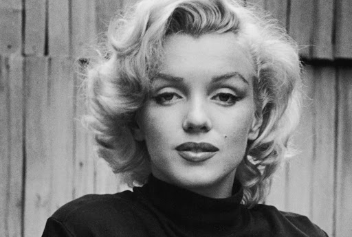
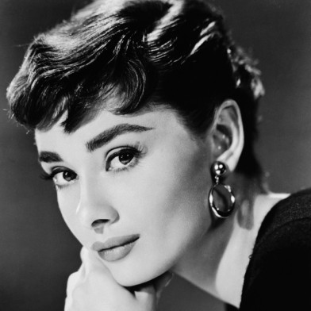
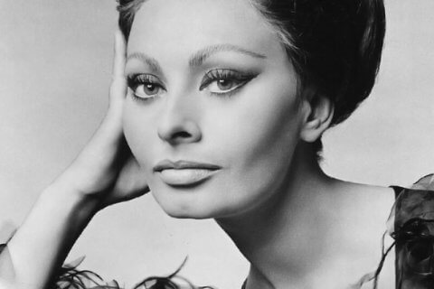

LE DIVE DEL CINEMA
Durante la storia si sono susseguiti molteplici diktat di stile, ma l'avvento del cinema e delle star di Hollywood ha cambiato (quasi) tutto. I modelli delle epoche precedenti, i reali e le dee dei dipinti, nel '900 lasciano il posto alle dive, che diventano vere e proprie icone di bellezza.
Audrey Hepburn, Marilyn Monroe, Greta Garbo: la scelta non è più univoca. E anche l'offerta cosmetica comincia ad ampliarsi sempre più sul mercato, offrendo una scelta sempre maggiore.
Sapevi che...?
Sophia Loren prediligeva solo rossetti dal sottotono bronzo oppure albicocca per esaltare il suo incarnato; mentre Vivian Leight utilizzava il rouge sia per le guance che per dipingere le labbra.
Il truccatore di Marilyn Monroe Allan Snyder, in arte Whitey, fu il precursore del contouring realizzato come al giorno d'oggi. Egli, infatti, sfumava del fondotinta più scuro su alcune zone del viso della diva per sfinarlo otticamente. "Promettimi che mi truccherai quando morirò!" sono le parole di Marilyn al suo truccatore.
fonte:www.donnamoderna.com
  